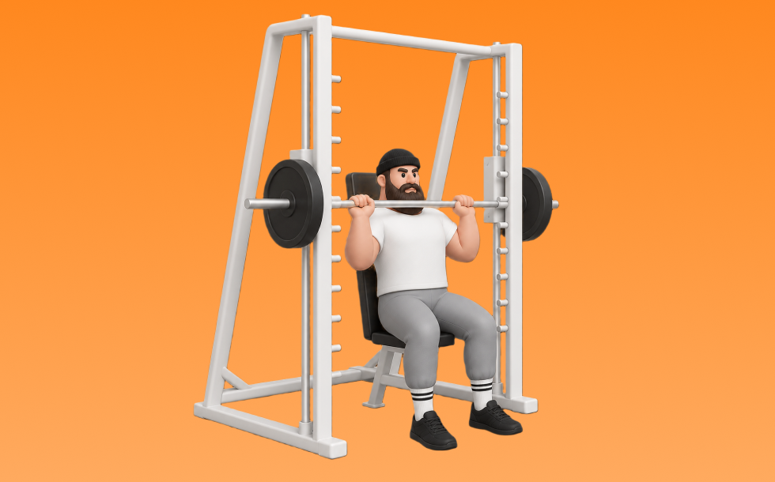

スミスフロントプレス

スミスフロントプレスとは、スミスマシンを使って前側から頭上へ「押す」動作で肩（三角筋）と腕（上腕三頭筋）を鍛える種目です。バー軌道が安定して安全に追い込みやすいのが特徴で、体幹を保ってバーを真上へ押し、ゆっくり戻す動作を繰り返します。肩の筋力・筋量アップとプレス動作の安定化が期待できます。
- 対象部位
- 肩
- 器具
- スミスマシン
- 記録形式
- 重量・回数
- 別名
- スミスショルダープレス / smith front press / smith shoulder press
YouTube動画
-
【初心者】スミスマシン ショルダープレスの正しいやり方 | 三角筋に効かせる【ビーレジェンド プロテイン】
-
肩トレの極意！これを知って、丸い肩を作ろう！
-
スミスマシン フロントプレスの解説
-
【肩トレ】スーパースミスでフロントプレス解説。#エニタイムフィットネス #スミスマシン #肩トレ
-
【肩トレ】スミスマシンを使ったフロントショルダープレス
-
【筋トレ悪いフォーム解説】バックプレスで肩を痛めずに鍛えるやり方を伝授！
-
【全力解説】肩トレに絶対外せない筋肥大させるためのショルダープレスを持田選手が解説してくれました！
-
【どのフォームが正しい？】肩トレで人気のショルダープレス、サイドレイズで気になるポイントを全部解説します【筋トレ】
-
【筋トレ】フロントプレスとバックプレスの違いと使い分け方 | ボディビルチャンピオンが解説【ビーレジェンド プロテイン】
-
【初心者向け】フロントプレス の正しいフォーム
-
【山岸秀匡】肩の基本種目第一弾！スタンディングミリタリープレス
-
【筋トレ】これが基本！スミスマシンを使ったスクワットの正しい方法
-
【肩トレ】胸に効かせず肩で押し上げるポイント解説！【ショルダープレス】
-
肩を鍛えるオーバーヘッドプレスのやり方【筋トレ】
-
【肩をデカくするならプレスしろ！】喜納穂高選手によるスミスショルダープレス解説
-
【SGIR】ミリタリープレスについて
-
【スミスマシン】肩の前側をしっかり鍛えるショルダープレス＆フロントレイズのやり方！
-
ショルダープレスの刺激の違い④（スミスマシン）【糸井トレーナー】
-
【初心者必見】スミスマシンを使って安全効果的にメロン肩作り！【ショルダープレス】
-
【肩トレ】肩のフロント・トレーニング スミスショルダープレスとアップライトロウ！
-
【一撃でマスター】スミスマシンの使い方完全攻略 全18種目
YouTubeショート
-
最短で肩をデカく！！スミスミリタリー解説🔥#筋トレ #マッチョ #肩トレ#ミリタリープレス
-
スミスマシンを使ったフロントプレスのやり方-肩を鍛える筋トレ方法
-
みなさんはスミスマシンショルダープレスやってますか？こんがりがしっかり三角筋に効くトレーニングをレクチャーしてくれました！#volix #肩トレ #ちょこっとおしい #三角筋 #volixgear
-
スミスショルダープレス70kg #shorts #筋トレ女子 #トレーニング
-
肩をデカくするスミスマシンの軌道
-
【肩トレ解説】スミスバックプレス #筋トレ解説 #肩トレ #肩トレーニング
-
正しいオーバーヘッドプレス4つのポイント #フィットネス #筋トレ
-
初心者必見！スミスマシンで行う脚トレ6選詰め合わせ！ #筋トレ
-
バーベルショルダープレスのやり方#初心者 #ジム #バーベル
-
肩の補助種目はミリタリープレス一択！！
-
効かせるショルダープレス
-
正解はこれだ‼︎ミリタリープレス編 #筋トレあるある #筋トレ初心者 #肩トレ
-
【MUSTER】バーベルフロントプレス
-
めっちゃ肩がデカくなった今やってるメニュー！#shorts
-
今日の肩トレ！#筋トレ大学生 #筋トレ男子 #gymmotivation #fitnessmotivation
-
【スミスマシンの向き▶️】ショルダープレスの負荷を最大に🏋️#筋トレ#フィットネス#肩トレ
-
スーパースミスでフロントプレス。
-
先生!肩をデカくするおすすめの筋トレメニューは？ ＃Shorts #肩トレ
-
井上桂将選手 肩トレーニングその1 スミスマシンフロントプレス
-
【山岸秀匡】肩の基本種目第一弾！スタンディングミリタリープレス
-
カネキン式ダンベルショルダープレスのコツ#shorts #筋トレ #肩トレ
-
三角筋前部のミッドレンジ種目「スミスフロントショルダープレス」
-
肩メロンに重要な立体感を作る、スーパースミスマシンを使ったフロントプレス‼️
-
『フロントショルダープレス、フロントプレス』●対象筋群:三角筋 上腕三頭筋 前鋸筋 体幹筋群 ★動作パターン［上半身 押す・プッシュ］
-
フロントプレス 75kg
-
スクワットの正しいやり方【筋トレ】
-
【オーバーヘッドプレス】怪我なく肩を鍛える正しいフォーム解説
-
持田選手にスミスマシンを使ったスクワットについてレクチャーしていてもらいました！次はどの種目の解説をやってほしいかコメントしてね！#筋トレ #volix #トレーニング #fitness
-
背中が成長しないラットプルダウン
動作方法
- 安定した姿勢を作り、肩と体幹を固定する
- 狙う部位を意識して、反動を使わずに押す
- 可動域を保ちながら、ゆっくり元に戻す
動作ポイント
- 肩をすくめない
- 手首を寝かせすぎない
- 反動を使いすぎない
ワンポイントアドバイス
- 重量よりも肩の軌道を安定させる
- 首まわりの力みを減らして行う
目的別回数設定
目的や体力に応じた一般的な目安です。無理のない範囲で調整してください。
- 筋力アップ
- 1〜5回
- 筋肥大
- 6〜12回
- 持久力アップ
- 13〜20回
YouTube動画について
動画はYouTubeの公開情報をもとに表示しています。内容は投稿者によるもので、Biggrによる監修ではありません。
アプリを入手
筋トレやトレーニングの記録はBiggrにお任せください。今すぐ無料で使い始められます。